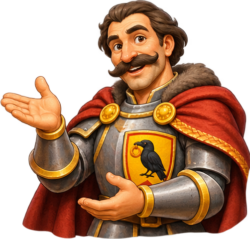

HazaVár
!
Napi
!
Történetek
Törzsfő
6. korszak
0
Pénz · dénár
0
/ 1 000
Termény
0
Tudás
0
Fa
0
Lakosok
+0%
Hangulat
25
6. Hunyadiak · Nándorfehérvár és Mátyás
0 / 9
Idővonal

!
Jönnek a tatárok!
Tatárjárás
Felkészültség
0%
Felkészülés
!
Építés
!
Kutatás
!
Törvények
0 / 2 érvényben
Raktár
Bolt
Építés
Mi mire jó?
Kész